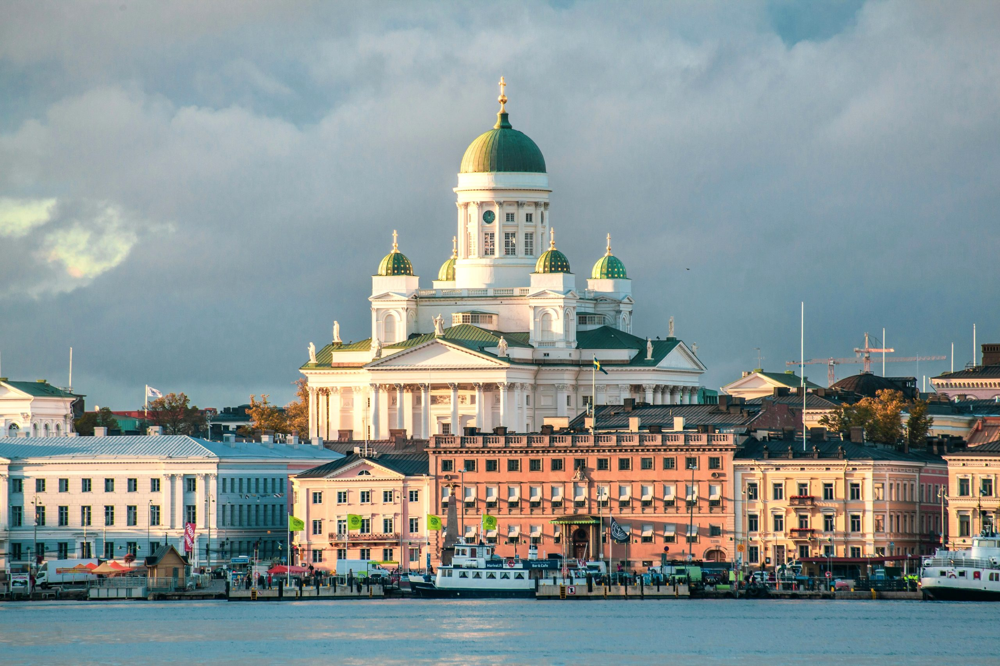

Helsinki
Helsinki, Finland’s southern capital, sits on a peninsula in the Gulf of Finland. Its central avenue,
Mannerheimintie, is flanked by institutions including the National Museum, tracing Finnish history from the
Stone Age to the present. Also on Mannerheimintie are the imposing Parliament House and Kiasma, a contemporary
art museum. Ornate red-brick Uspenski Cathedral overlooks a harbor. ― Google

Population: 684,589 (Dec 31, 2023)
Land area: 213.8 km²